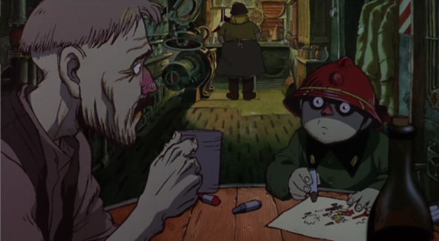

Huh... at the time of this writing, I've compiled over 500 other self-written critiques of animation from Japan and around the world. But I haven't yet reviewed the anime anthology film "Memories"? This was one of the first anime DVDs I collected, when I started around the mid-2000's, alongside other movies that were still in print, like "Paprika" and "Steamboy." I also discovered it shortly after watching "The Animatrix," an experimental but all-around successful anthology inspired by "The Matrix" live-action movies. It turned out that Japan has a history of packaging experimental stand-alone short films into a larger movie, a practical way to train animators without risk, and to allow the team to be a little more creative.(And in 2021, Discotek produced a prestige release of "Memories" on Bluray, with an English dub for the first time! This will be featured for this review.)Anyway, aside perhaps from "The Animatrix," "Memories" seems to be one of the more celebrated anthology movies in North America, thanks in part to its wide availability on home video, and that fact that all of its short stories are surprisingly strong and compelling, despite how diverse they are. Perhaps that's because the risk was reduced: there's only three stories here, each one ranging from 30 minutes to a lengthy 45 minutes, practically the length of some full feature-length movies. Part of the legacy here is that "Memories" was helmed by Katsuhiro Otomo, the guy who wrote the famous manga series "Akira" (he directed the anime film too). In fact, Otomo's film work has mostly been in leading these anthology movies, as he also set up "Neo Tokyo," "Robot Carnival," and "Short Peace" as well as "Memories," all four of which are arguably the most well-known anime anthologies. In the case of "Memories," he apparently came up with the synopsis for all three stories, named "Magnetic Rose," "Stick Bomb" and "Cannon Fodder." He further wrote the full screenplay for "Bomb" and "Fodder," and directed "Fodder" too, so his hands are all over. More interestingly, the screenplay of "Rose" was adapted by Satoshi Kon, who at the time was a struggling manga writer and anime artist, but would later become one of the most influencial anime directors of all time. When talking about Kon's limited body of work (he passed away far too soon), "Rose" feels like him and what he'd be known for in future stories thematically.Anyway, "Magnetic Rose" is the first short, and arguably the poster child for the entire project. A great work of science fiction and horror, it's about a small crew of space garbage collectors who act upon a distress signal coming from an abandoned space vessel. As it progresses, we learn about the nature of the abandoned vessel from ghosts and spectres, as well as learning the background of some of the garbage collectors, and what drove them to work such menial jobs away from society. It smartly characterizes and humanizes the characters in their dialogue without reliance on unnatural exposition. It knows when to use humor, but also when to rely on drama. So much of the writing in this short alone is a masterclass in storytelling, and the power of animation for mature stories. It even makes great use of some early CGI in a way that fits, and isn't distracting (remember, this was released in 1995, so it was EXTREMELY ahead of its time). If anything, the only complaint I might have is that it's a little too long, and that science fiction was never my favorite genre personally, although "Rose" comes close to changing my mind. "Stink Bomb," by comparison, feels the most like Otomo's work, if only because of the character designs (technically, Madhouse made this short while Studio 4C worked on the others, but it's still confusing to think this ISN'T the one that Otomo directed himself). A complete 180 to "Rose," "Bomb" is a political satire set in present day (1990's) Japan, where one salaryman inadvertently takes an experimental pill to treat a nasty cold... which happens to be a secret bioweapon his company was working on with funding from the US. The result is that the man immenates a powerful odor that kills everyone within a certain radius of him. Alone and confused, the man tries to get to the city to deliver documents per his CEO's instructions, while the board of directors and army try to stop him, less they risk further national disaster. The premise is funny (especially the kicker of an ending!), and it features an eclectic up-beat jazz-funk soundtrack, making it arguably the most entertaining of the three shorts. But I was more captivated by "Rose," while the premise of "Bomb" gets old before it eventually ends (again, it's a little too long), and the setting is predestrian compared to the other two stories.  Finally, there's "Canon Fodder." It doesn't look like any anime I've seen, but might be recognizable as Otomo's directorial style for its sheer ambition. In fact, this looks like a Soviet-Union cartoon, and could be mistaken as their propoganda celebrating war, if not for the political statement asked by a child at the end. This isn't a story, but a "day-in-the-life" of a fictional nation preparing for some on-going war: the children march to school with helmets dreaming of fighting in the army, fathers work in the canon armory, and mothers work in the factory. The entire town is a machine doing their duty to fight against a common enemy. But who is the enemy? Why are they fighting a war? There are no answers to whether the war is even real, but everyone just accepts it as so. While some viewers might be disappointed by the lack of story, the sheer experimental nature of it, this bizarre wood-cut visual style shot as if the entire short was a single unedited shot, is an incredible wonder to behold. Again, this was released in 1995! Even Disney wasn't attempting anything this stupidly bold! Even though I'd list this as my second favorite behind "Rose," it's easy to argue that "Canon Fodder" is perfect as it is.Now, this was released on Bluray by Discotek in North America, and the format really brings new life to the anthology. "Magnetic Rose" looks fantastic, as if it was painted using modern digital workflows. Discotek touted that they used an experimental "AstroRes" upscaling software to make this "remaster" look as good as it does, although they also include the "original" master on the disc for distrustful viewers to choose from. And when switching between the two... "Rose" look fantastic on the "original" version too. It turned out that "AstroRes" was only used on a portion of the shots, and it does help make the entire short look consistent (the "original" has a few shots that are much more blurry than the others), but it wasn't essential for a still strong picture quality. "Canon Fodder" and "Stink Bomb" apparently didn't get the "AstroRes" treatment at all, and their quality doesn't look nearly as impressive as "Rose" did ("Stink Bomb" in particular looks fuzzy in most of its shots), but it's a still a decent remaster worthy of Bluray.But what really makes the Bluray noteworthy (and the one reason why it might be worth upgrading from that old DVD) is the new English dub. Yes, I'm a dub fan, and it's a great dub all around, especially for "Magnetic Rose." Coupled with the music, it's an exceptional audio presentation. In short, if you haven't seen "Memories" yet, you really should. It's one of the most well-rounded and overall strong packages of shorts. These anthologies are always better suited to the more experimental and artistically-inclined film fan, but this is a great gateway for the uninitiated to get hooked on anime outside their comfort zone, or even to anime in general.
- "Ani" More reviews can be found at : https://2danicritic.github.io/ Previous review: review_Melody_Time Next review: review_Metropolis